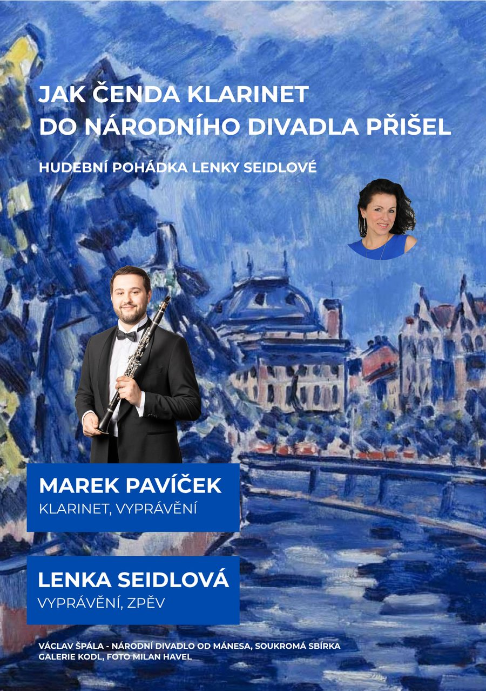

Hudební pohádky → Jak Čenda Klarinet do Národního divadla přišel

Jak Čenda Klarinet do Národního divadla přišel
Hudební pohádka, v níž děti poznají kouzelný tón klarinetu prostřednictvím veselého příběhu Čendy, který do hlavního města putuje s muzikou v srdci. Klarinetista přímo na pódiu ukazuje nástroj, zahraje slavné motivy z děl G. F. Händela, W. A. Mozarta a Bedřicha Smetany. Během interaktivního programu si děti zazpívají známé lidovky, hádají, co se v hudbě děje, a pomáhají Čendovi na jeho cestě.
Účinkující
- Lenka Seidlová: vyprávění, zpěv
- Marek Pavíček: klarinet a vyprávění
Délka představení: 30–45 minut, dle věku a nálady malých posluchačů. Vhodné pro malé i větší posluchače, kteří mají rádi příběhy a hudbu.
Mám zájem o tuto pohádku